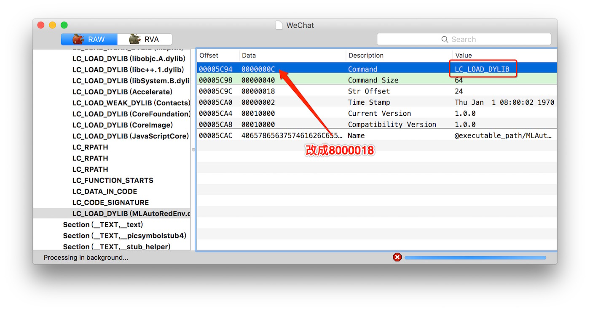
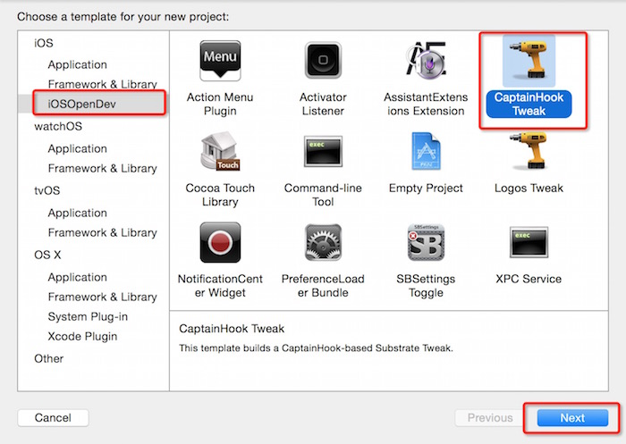
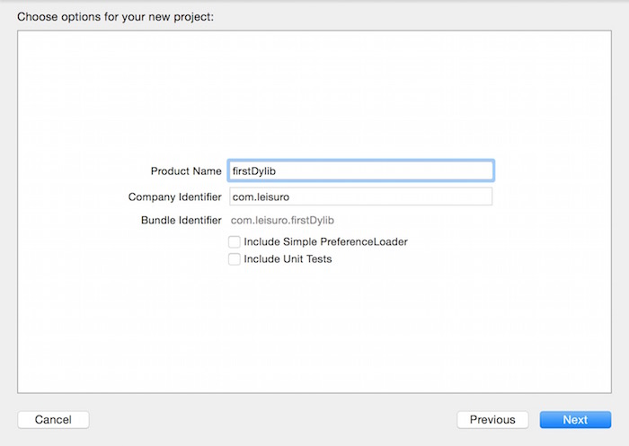
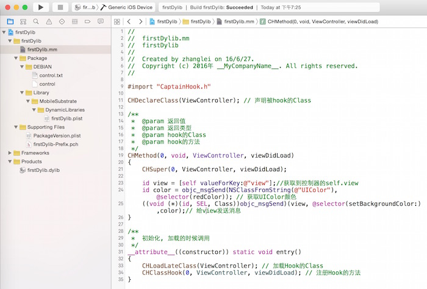
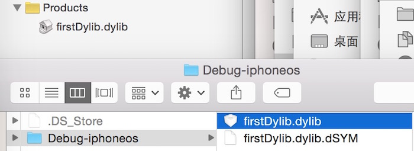
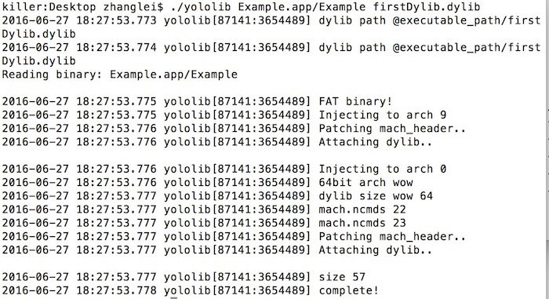
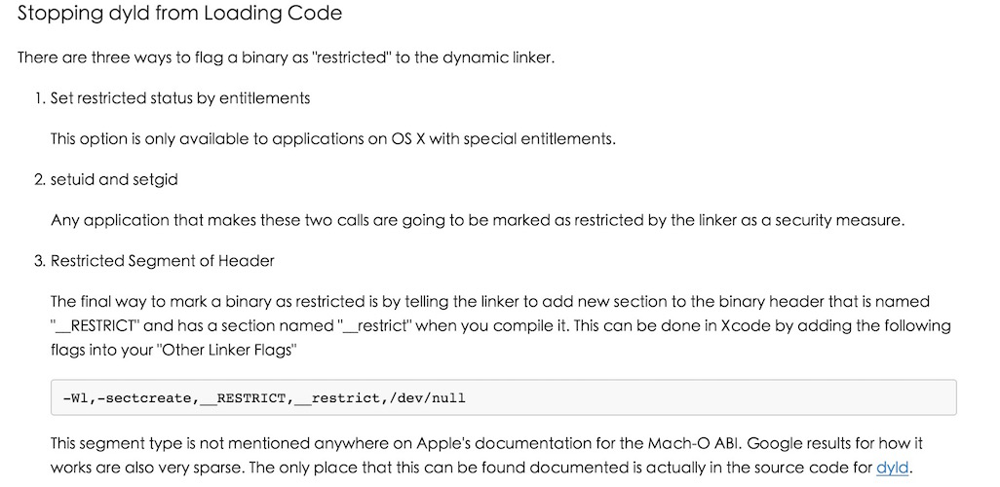
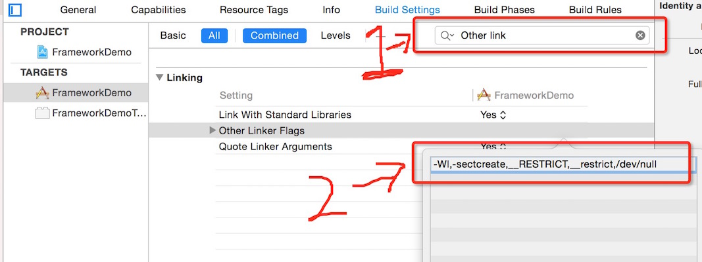
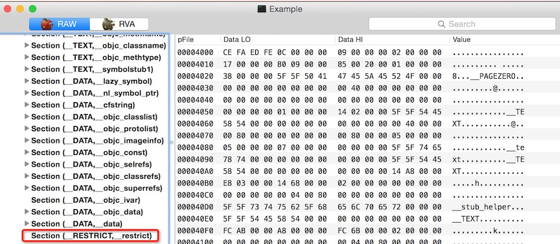

前言
很多时候写代码, 很少会静下心来 想想某个函数内部大概是怎么实现, 苹果为什么要这么设计? 这样的带来的好处是什么? 我们开发者能不能很好的自定义? 等等.
因此我也想从这篇文章入手, 一起来认识一下dylib. 文章有误的地方请@我, 我会来改正
什么是dylib?
苹果在iOS8之前, 是不公开创建动态库的, 包含动态库的是不允许上传AppStore, 都是苹果自己内部在使用(自嗨). 后面随着苹果越来越OPEN, 在WWDC2014的时候, 放开了dylib供开发者使用.
在讲dylib之前, 先预热一下 :)
OC是一门动态语言, 那么每种语言里面都会有函数的存在, 在iOS中, 函数又分为两种, 一种是静态函数, 一种是动态函数. 对应的也就是默认的.a(静态库)与.dylib(动态库)
先来介绍下苹果里面的动态函数库 简称: dylib(dynamic library)
所以dylib在程序编译的时候, 并没有被编译进二进制目标代码中, 只有当程序里执行相应的函数才调用该函数库里对应的函数。
优势 :
1.文件体积会更小
2.升级会更方便
3.改动代码的话可以省去重新编译的时间
dylib加载顺序
没看过@sunnyxx这篇文章的这里是传送门->iOS 程序 main 函数之前发生了什么
如何查看当前App引用了那些dylib与framework?
查看Mach-O(可执行二进制文件)引用的framework与dylib可以通过两种方式来看.
1. 命令行: otool -L yourApp.app/yourApp
2. 用MachOView视图工具, File->Open->YourApp.app/yourApp
那么下面来说说动态库的加载顺序
1. 首先会加载系统级别的dylib, 目录在设备的`/usr/lib/`, 文件:`libsqlite3.dylib、libc++.1.dylib...`
2. 然后加载系统级别的framework, 目录在设备的`/System/Library/Frameworks`, 文件:`Foundation.framework`
3. 再引入runtime、gcd存放的dylib, 目录在设备的`/usr/lib/`, 文件:`libSystem.B.dylib、libobjc.A.dylib`
3. 再引入自己注入的dylib, `@executable_path/`(目录存放在当前可执行文件底下)
所以逆向的人能hook系统的API也是因为系统的framework先加载.
dylib与Mach-O之间的关系
先来认识下Mach-O, 是Mach object文件格式的缩写，是一种可执行文件、目标代码、共享程序库、动态加载代码和核心DUMP。是a.out格式的一种替代。Mach-O提供更多的可扩展性和更快的符号表信息存取。
App里面的所有代码，资源，可执行文件都会在程序编译的时候打包进Mach-O文件里面.
Mach-O一般分为几段: mach_header、load_commands、segment
mach_header: 具名的逆向工具class-dump, 可以实现dump出目标App所有的Class Header, 原理就是通过读取mach_header来做的.
load_commands: 是包含了App所有引用到的dylib与framework. otool -L 这个命令行是通过读取Mach-O里面的load_commands来展示的.
segment: 一个可执行文件包含多个段, 在每一个段内有一些片段。它们包含了可执行文件的不同的部分, 包含了部分的源码及DATA.
引入头文件#include <mach-o/loader.h>可以看看dylib的结构
dylib是个结构体, app启动的时候, 会加载ImageLoadermach_header中的dylib, 每个dylib中的cmd状态为LC_LOAD_DYLIB就会被加载.// 关于dylib结构体
struct dylib_command { uint_32 cmd; uint_32 cmdsize; struct dylib dylib; };
struct dylib { union lc_str name; uint_32 timestamp; uint_32 current_version; uint_32 compatibility_version; };
介绍一下dylib_command->cmd对应的状态#define LC_REQ_DYLD 0x80000000
/* Constants for the cmd field of all load commands, the type */
#define LC_SEGMENT 0x1 /* segment of this file to be mapped */
#define LC_SYMTAB 0x2 /* link-edit stab symbol table info */
#define LC_SYMSEG 0x3 /* link-edit gdb symbol table info (obsolete) */
#define LC_THREAD 0x4 /* thread */
#define LC_UNIXTHREAD 0x5 /* unix thread (includes a stack) */
#define LC_LOADFVMLIB 0x6 /* load a specified fixed VM shared library */
#define LC_IDFVMLIB 0x7 /* fixed VM shared library identification */
#define LC_IDENT 0x8 /* object identification info (obsolete) */
#define LC_FVMFILE 0x9 /* fixed VM file inclusion (internal use) */
#define LC_PREPAGE 0xa /* prepage command (internal use) */
#define LC_DYSYMTAB 0xb /* dynamic link-edit symbol table info */
#define LC_LOAD_DYLIB 0xc /* load a dynamically linked shared library */
#define LC_ID_DYLIB 0xd /* dynamically linked shared lib ident */
#define LC_LOAD_DYLINKER 0xe /* load a dynamic linker */
#define LC_ID_DYLINKER 0xf /* dynamic linker identification */
#define LC_PREBOUND_DYLIB 0x10 /* modules prebound for a dynamically */
#define LC_ROUTINES 0x11 /* image routines */
#define LC_SUB_FRAMEWORK 0x12 /* sub framework */
#define LC_SUB_UMBRELLA 0x13 /* sub umbrella */
#define LC_SUB_CLIENT 0x14 /* sub client */
#define LC_SUB_LIBRARY 0x15 /* sub library */
#define LC_TWOLEVEL_HINTS 0x16 /* two-level namespace lookup hints */
#define LC_PREBIND_CKSUM 0x17 /* prebind checksum */
/*
* load a dynamically linked shared library that is allowed to be missing
* (all symbols are weak imported).
*/
#define LC_LOAD_WEAK_DYLIB (0x18 | LC_REQ_DYLD)
不加载某个dylib
当dylib_command中的cmd的状态为LC_LOAD_DYLIB加载命令声明了一个所需的动态库, 如果未找到dylib就会抛出异常.
如果是LC_LOAD_WEAK_DYLIB声明的库就是可选的, 未找到也不会有什么影响.
可以通过MachOView来改变cmd的值

通过MachOView修改dylib的加载状态
安装iOSOpenDev
iOSOpenDev是开发逆向Xcode的模板, 不需要越狱.
没有安装的请戳我, 安装iOSOpenDev
当你安装失败的时候请戳这个, 解决安装失败, 因为在Xcode7文件目录有点调整
安装成功后, 重启Xcode.
利用iOSOpenDev创建一个dylib
安装后, 打开Xcode Command+Shift+N 新建一个项目, 你会看到这个模板.

直接下一步

创建一个dylib
简化后的OpenDev代码, hook App的ViewController打印一个log

创建一个dylib
真机编译后, 找到Products生成的dylib.

拿到dylib准备注入
将dylib注入到App里面
注入神器yololib放到App目录 Github链接yololib
./yololib Example.app/Example firstDylib.dylib

yololib注入dylib
注入dylib成功后, 还需要对App重签名.
将刚才的dylib拷贝到.app/里面
拿到你公司项目或者自己创建一个Demo, 选择好Code Sign编译后, 通过ldid来获取App底下的数据, 但是得保证你手机上安装的证书是有效的.
./ldid -e ./Example.app/example
新建Entitlements.plist<?xml version="1.0" encoding="UTF-8"?>
<!DOCTYPE plist PUBLIC "-//Apple//DTD PLIST 1.0//EN" "http://www.apple.com/DTDs/PropertyList-1.0.dtd">
<plist version="1.0">
<dict>
<key>application-identifier</key>
<string>123456.io.github.makezl</string>
<key>com.apple.developer.team-identifier</key>
<string>123456</string>
<key>get-task-allow</key>
<true/>
<key>keychain-access-groups</key>
<array>
<string>123456.io.github.makezl</string>
</array>
</dict>
</plist>
embedded.mobileprovision
进入公司的App, 或者你自己编译好的App里面, 复制embedded.mobileprovision到Example.app里面
证书名字可以在钥匙串中找到
codesign -f -s "iPhone Developer: YouName" --entitlements Entitlements.plist Example.app |
打包成ipa, 给Example.app重新签名后，我们就可以用xcrun来生成ipa了，具体实现如下：xcrun -sdk iphoneos PackageApplication -v Example.app -o ~/Example.ipa
通过PP助手安装到你手机上, 就可以啦~~
安装成功后, 用Xcode打开设备的log.
Jun 27 19:15:51 zhangdachuide-iPhone60s Example[2650] <Warning>: orign - ViewController viewDidLoad |
App防止dylib注入
如何防止dylib注入呢？看下面这段话When an application is launched the binary is run through dyld and that processes the binary file.
This finds what libraries it needs to load and link against to generate a complete symbol table.
Doing this requires parsing through the binary header,while it does this it can trigger flags in
dyld based on what segments are present in the binary. There is a special flag that will be set for binaries
that are marked as "restricted".
This special flag means that the dynamic linker should ignore any set environment variables.
大概的意思是: 当运行的时候Mach-O文件里面segments会检测有没有restricted的情况下, 有的话就会忽略DYLD_INSERT_LIBRARIES.
dylib的注入一般是通过DYLD_INSERT_LIBRARIES这个环境变量来实现的。
这三种情况下，DYLD_环境变量会被dyld无视：

防止dylib注入
在Xcode Other Linker Flags加一个:-Wl,-sectcreate,__RESTRICT,__restrict,/dev/null
然后重新编译项目

通过Xcode修改dylib的加载状态
用MachOView打开App的可执行文件

修改__RESTRICT后的图片
看到图多了一个Section RESTRICT, 当然这样只是可以稍微防止一下, 要是别人通过010Editor,改了Mach-O里面的RESTRICT名字, 那么还是可以注入. ╰( ￣▽￣)╮
小结
本文到此就结束了, 本来打算多研究一下Mach-O的文件结构, 但是最近杂事太多, 也没继续往深入研究, 是否对你有帮助呢 或者有好的想法的? 请留言讨论吧 :-)